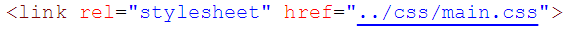

Dado un contenedor busca todas las imágenes que encuentre dentro y las reemplaza por un nuevo elemento <'figure'> que contenga la imagen
(<'img'>) además de un<'figcaption'> con el texto del atributo alt de la imagen.
Como enlazarlo:
Despues de forkear el repositorio, debes enlazar 2 archivos importantes, index.js y main.css. 